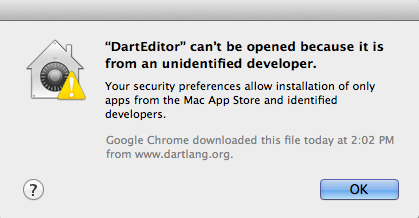

Launching Dart Editor
Your Java version should have the same bit width as your Dart Editor version. For example, if you're using a 64-bit Dart Editor, then you should use 64-bit Java. Otherwise, you might see a message like this when you try to launch Dart Editor:
Failed to load the JNI shared library "C:\Program Files(x86)\Java\jre6\\bin\client\jvm.dll
You can find the bit width of your default Java version using the command
java -version.
If you're using 64-bit Linux but have 32-bit Java libraries, Dart Editor won't work.
The fix: Use a 64-bit Java JDK. You can get a 64-bit JDK 7 from Java SE Development Kit 7 Downloads. If you already have a 64-bit JDK but it's not the default, you can specify the Java runtime.
A few things can go wrong when launching Dart Editor on a Mac:
- Unidentified developer
- "DartEditor.app" is damaged (64-bit only)
- Java installation failure
- Slow startup
- 32-bit Mac
Unidentified developer
If you're running Mac OS 10.8 (Mountain Lion), your computer might refuse to start Dart Editor because it's not from the Mac App Store or an identified developer. Until we fix this problem (bug #5088), you can work around it.

The easiest workaround: When launching Dart Editor for the first time, don't double-click the Dart Editor icon. Instead, right-click (or Ctl+click) it to bring up a context menu, and choose Open. Then, in the dialog that comes up, click Open.
An alternative workaround is to change your security settings. Go to System Preferences > Security & Privacy. In the General tab under Allow applications downloaded from:, choose Anywhere. You should now be able to start Dart Editor. Once you've run Dart Editor, you can change the preference back to its previous setting.
"DartEditor.app" is damaged (64-bit only)
Sometimes when you try to launch a new, 64-bit build of Dart Editor, Mac OS X incorrectly displays a corruption warning:
"DartEditor.app" is damaged and can't be opened. You should move it to the Trash.
The workaround is to download and install the 32-bit version of Dart Editor.
Java installation failure
When you try to run Dart Editor but don't have a Java SE 6 runtime, Dart Editor offers to install Java for you. If the installation doesn't work, you can either restart Dart Editor or install Java yourself.
Slow startup
If you use Sophos Anti-Virus, Dart Editor (like most Java applications) starts up 10-15 times slower than normal.
The fix: Turn off scanning of the app's JAR files. For example:
- In Sophos Anti-Virus preferences, choose On-access Scanning.
- If the preferences are locked, click the lock and enter your password.
- Click Excluded Items and then the + sign.
- Navigate to the directory that contains
DartEditor. - Search for files under that directory
with names that end in
.jar. - Select all these
.jarfiles, and click Open.
32-bit Mac
If you're using one of the increasingly rare 32-bit Macs, you can't launch the 64-bit version of Dart Editor. Instead, you see a warning like this:

The fix: Download and install the 32-bit version of Dart Editor.
Specifying the Java runtime
If necessary, you can specify the Java runtime that Dart Editor uses.
Go to your Dart installation directory and
add the following two lines to DartEditor.ini
immediately before the existing
‑vmargs line:
-vm /full/path/to/java
Important:
On Windows, use double backslashes (\\)
as the directory separator:
-vm
c:\\bin\\java_jdk1.7.0\\bin\\javaw.exe
For example, DartEditor.ini might have:
... -vm /usr/local/buildtools/java/jdk-64/bin/java -vmargs ...